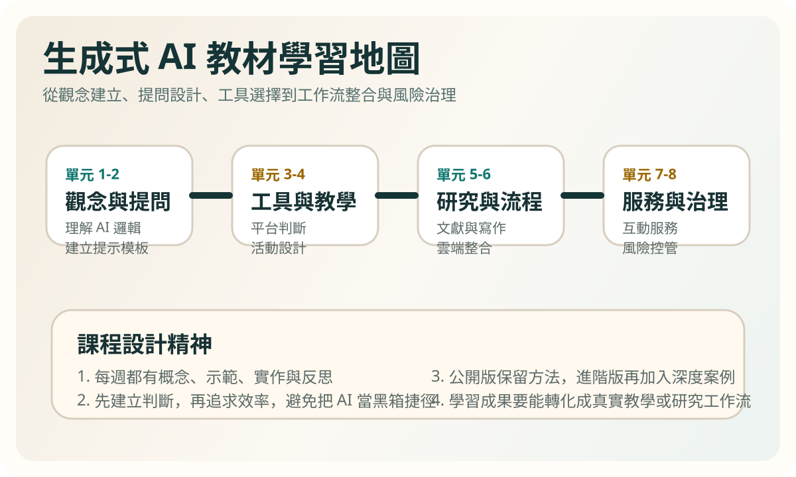
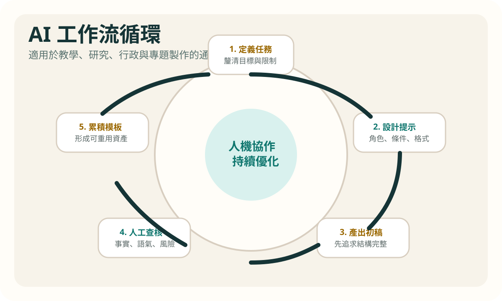

<!doctype html>
<html lang="zh-Hant">
<head>
  <meta charset="utf-8" />
  <meta name="viewport" content="width=device-width, initial-scale=1" />
  <title>?飛閮 | ??撘?AI ?飛?祕雿???/title>
  <link rel="stylesheet" href="styles.css" />
</head>
<body>
  <header class="site-header">
    <div class="wrap topbar">
      <a class="brand" href="index.html">??撘?AI ?飛?祕雿???/a>
      <nav class="nav">
        <a href="index.html">擐?</a>
        <a href="teaching-plan.html">?飛閮</a>
        <a href="projects.html">撠?隞餃?</a>
        <a href="../index.html">摮貉?擐?</a>
        <a href="../sitemap.html">蝬脩?撠汗</a>
        <a href="teaching-plan_en.html">EN</a>
        <a href="README.md">??隤芣?</a>
      </nav>
    </div>
  </header>

  <section class="page-hero">
    <div class="wrap">
      <p class="breadcrumb"><a href="index.html">擐?</a> / ?飛閮</p>
      <p class="eyebrow">8-Week Map</p>
      <h1>8 ?望?摮貉??怨?撖行摰?</h1>
      <p class="lead">
        ?????游???頧??臬銵?隤脩??啣?嚗靘蹂??湔閬?瘥€曹蜓憿€暑??憟€?箄?瘙?閰??孵???      </p>
    </div>
  </section>

  <main class="wrap main-stack">
    <section class="section">
      <article class="panel figure-card">
        
      </article>
    </section>

    <section class="summary-box">
      <h2>隤脩?閮剛???</h2>
      <ul class="clean-list">
        <li>瘥€梢閬????急?敹萸€內蝭€毀蝧??€?銝? AI ?芸??撌亙撅內??/li>
        <li>瘥€梯撠????鈭支?隞餃?嚗?摮貊??敞蝛撌梁??內璅⊥?極雿???/li>
        <li>隤脩?敺挾?撠??祥??隢??踹?摮貊??炊隞亦 AI ?芰??澆翰???€?/li>
      </ul>
    </section>

    <section class="plan-grid section">
      <article class="lesson-card">
        <p class="section-label">Week 1</p>
        <h3>??撘?AI ?犖璈?雿?€</h3>
        <p>銝駁?嚗?閫?AI ??蝵柴€??嗉?璈???/p>
        <p>?Ｗ嚗?00 摮飛蝧???銝€撘萄€犖 AI 雿輻?啣???/p>
        <p>撠??桀?嚗?a href="units/unit01.html">?桀? 1</a></p>
      </article>
      <article class="lesson-card">
        <p class="section-label">Week 2</p>
        <h3>?內閰身閮?撠店蝑</h3>
        <p>銝駁?嚗??脯€遙?€?隞嗚€撘?????/p>
        <p>?Ｗ嚗? 蝯??內璅⊥????€?/p>
        <p>撠??桀?嚗?a href="units/unit02.html">?桀? 2</a></p>
      </article>
      <article class="lesson-card">
        <p class="section-label">Week 3</p>
        <h3>AI 撟喳?極?瑞?隞餃??豢?</h3>
        <p>銝駁?嚗??像?啁??瑁????嗉???斗??/p>
        <p>?Ｗ嚗極?瑟?頛”?蝙?刻牧???/p>
        <p>撠??桀?嚗?a href="units/unit03.html">?桀? 3</a></p>
      </article>
      <article class="lesson-card">
        <p class="section-label">Week 4</p>
        <h3>?飛瘣餃?銝剔? AI ?</h3>
        <p>銝駁?嚗?獢身閮€???箝€?擖???閰?頛??/p>
        <p>?Ｗ嚗?隞?AI ??飛瘣餃?閮剛?蝔踴€?/p>
        <p>撠??桀?嚗?a href="units/unit04.html">?桀? 4</a></p>
      </article>
      <article class="lesson-card">
        <p class="section-label">Week 5</p>
        <h3>AI 頛摮貉??弦瘚?</h3>
        <p>銝駁?嚗??餅?€?蝛嗅?憿€??身閮?撖思??舀???/p>
        <p>?Ｗ嚗?蝛嗉??怨?蝔踵?????€?/p>
        <p>撠??桀?嚗?a href="units/unit05.html">?桀? 5</a></p>
      </article>
      <article class="lesson-card">
        <p class="section-label">Week 6</p>
        <h3>撌乩?瘚??脩垢?游?</h3>
        <p>銝駁?嚗岫蝞”?”?柴€?隞嗉? AI 銝脫??蝔€雁??/p>
        <p>?Ｗ嚗?隞賢極雿??????隤芣???/p>
        <p>撠??桀?嚗?a href="units/unit06.html">?桀? 6</a></p>
      </article>
      <article class="lesson-card">
        <p class="section-label">Week 7</p>
        <h3>隞?????刻?鈭???</h3>
        <p>銝駁?嚗?憭拇??其犖?I Agent??????雿輻????/p>
        <p>?Ｗ嚗?????敹萄????質??潭??/p>
        <p>撠??桀?嚗?a href="units/unit07.html">?桀? 7</a></p>
      </article>
      <article class="lesson-card">
        <p class="section-label">Week 8</p>
        <h3>?怎??◢?芾????潸”</h3>
        <p>銝駁?嚗隤日◢?芥€????具€飛銵€怎????冽祥?€?/p>
        <p>?Ｗ嚗?憿銵刻? AI 雿輻?脫???/p>
        <p>撠??桀?嚗?a href="units/unit08.html">?桀? 8</a></p>
      </article>
    </section>

    <section class="rubric section">
      <h2>閰??孵?</h2>
      <table>
        <thead>
          <tr>
            <th>?</th>
            <th>瘥?</th>
            <th>隤芣?</th>
          </tr>
        </thead>
        <tbody>
          <tr>
            <td>隤脣????毀蝧?/td>
            <td>25%</td>
            <td>?撖虫?蝺渡???隢?????????/td>
          </tr>
          <tr>
            <td>瘥€曹遙??/td>
            <td>35%</td>
            <td>瑼Ｚ?摮貊???西?極?瑟?雿??鈭支????€?/td>
          </tr>
          <tr>
            <td>撠???</td>
            <td>30%</td>
            <td>曌敺?摮詻€?蝛嗚€??踵?????銝剝銝€??撖血?憿圾瘙箝€?/td>
          </tr>
          <tr>
            <td>AI 雿輻?€?/td>
            <td>10%</td>
            <td>閰摯摮貊???衣?閫???嗚€◢?芾?鞎砌遙????/td>
          </tr>
        </tbody>
      </table>
    </section>

    <section class="section">
      <article class="panel figure-card">
        
      </article>
    </section>
  </main>
</body>
</html>


